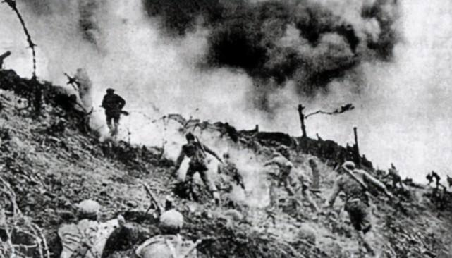

松骨峰阻击战
38军 万岁军！！——彭德怀。

1950年底，在抗美援朝第二次战役中，志愿军痛击美军为首的联合国军，歼敌达3.6万人，美联社、合众社发表 评论称：这是美国有史以来最大的败绩，最黑暗的岁月，美国参众两院的议员们痛斥麦克阿瑟是美国历史上最蠢的司 令官、最坏的笨蛋。然而美军的惨剧还远远没有结束。1950年11月30日拂晓，当时抗美援朝第二次战役已经展开，志 愿军第38军112师335团，为了追击南逃的美军，追到了松骨峰，为了给大部队留出足够的合围时间，一举将残敌歼灭， 当时的一营三连接到命令，负责抢占松骨峰北侧的无名高地，在此伏击敌人。早上6点30分，敌人的前头部队已经赶到 了松骨峰，正好与奉命占领阵地的三连战士打了一个照面，美军开始并未意识到危险的来临，一时间，汽车、坦克和步 兵黑压压地朝着松骨峰赶来，眼看着敌人马上就要驶近三连阵地前沿，连长戴如义一声令下，命令机枪射手、火箭筒射 手和爆破组向敌人发起了猛烈进攻，美军士兵大惊失色，无数汽车、坦克被炸，剩下的美国兵纷纷跳车乱跑，仿佛神兵 天降。此时的美国士兵意识到松骨峰阵地已经被志愿军占领了，慌忙组织反扑，不到半个小时，敌人便组织了8辆坦克、 10多门大炮和11架飞机开始了疯狂反扑，美军想一举夺下松骨峰阵地，于是组织了5次冲锋，但是均被志愿军打退了， 仓皇丢下100多具尸体逃跑了。

一时之间美军不敢轻举妄动，志愿军利用这宝贵的时间趁机抢挖工事，准备死守阵地，在阵地上，三连战士自知敌 人断然不会善罢甘休，此战将异常残酷，于是指导员杨少成于阵地上召集支委们开会，号召党员发挥模范先锋作用，并 烧毁了自己的所有文件和笔记本，表示与阵地共存亡。果然，数小时后，敌人搬来了援兵，用炮弹、燃烧弹将松骨峰阵 地炸成了一片火海，一顿狂轰滥炸之后，400多名美军向阵地开始了轮番进攻，此战让三连的战士遭受了巨大损失，连 长不幸中弹牺牲，副连长接替连长继续死守阵地，三次负伤仍然坚守不退。此时，我军正对敌军展开合围，美军预感到 不妙，更疯狂地朝松骨峰阵地发起进攻，又集结了18辆坦克、几十门大炮和32架飞机对阵地进行了长达40多分钟的轰炸， 阵地再次陷入一片火海，美军的意图非常明显，他们想尽量避免与我军短兵相接，通过这种残酷的方式来彻底消灭我军， 然后组织步兵冲锋，一举拿下阵地。可三连的战士们各个都已经抱定了必死的决心，他们一边扑灭火海，一面用炮弹坑做 工事，和敌人展开了殊死拼杀，指导员杨少成子弹打光了，就捡起地上的刺刀向敌人继续冲锋，由于寡不敌众，杨少成被 美军包围，为了不让阵地落入敌人手中，他毅然拉响了腰间的手榴弹，和六七个敌人一起同归于尽，战士张学荣身负重伤， 拼尽最后一口气捡起旁边的4枚手榴弹，拉开了引信奔向敌群。这就是朝鲜战场上一场最壮烈的战斗。从上午6时打到中午 12时，三连剩下6个没有负伤的人，敌人死亡600多，敌我损失之比约为6∶1。三连胜利地完成了阻击任务，使主力部队及 时赶来，被堵截的美二师主力、美二十五师、伪一师等敌大部被我聚歼。志愿军领导机关授予该连“攻守兼备”锦旗一面，记 集体特等功，第38军授予该连“英雄部队”称号。当听到松骨峰惨烈的战报时，彭德怀流泪了，他为战士们的英勇而流泪，为 这群年轻的战士们而流泪，他怒赞38军“万岁”，从此38军“万岁军”的荣誉传遍了全国。当年魏巍写的那篇让人感动落泪 《谁是最可爱的人》让志愿军在抗美援朝战争中的真实生活披露于大众的视野，也正是从那时开始，志愿军战士有了一个 更加亲切的名字——“最可爱的人”